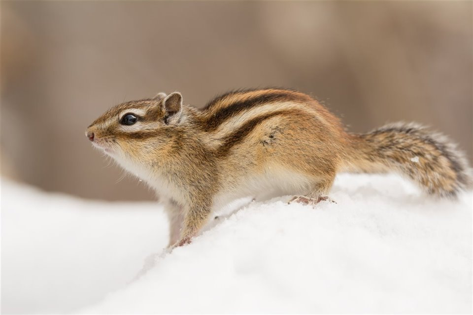

Las emisiones de yodo, claves en la destrucción de la capa de ozono en la Antártida
El agujero de ozono antártico se convirtió en 2021 en el decimotercero más grande
registrado desde 1979
La estratosfera, o lo que es lo mismo, la capa situada entre los 10 y los 50 kilómetros de altura de
la atmósfera, contiene alrededor del 90% del ozono que rodea nuestro planeta. Esta
alta
concentración resulta fundamental, ya que este gas conformado por 3 moléculas de oxígeno (O3) es el
encargado de filtrar casi la totalidad de la radiación ultravioleta procedente del sol.
Pero la concentración de ozono en la estratosfera no es constante, sino que puede variar
temporal,
espacial y estacionalmente. Por ejemplo, el agujero de la capa de ozono de la Antártida, es decir,
la disminución de la concentración de este gas en el continente helado, no es estático, sino que
fluctúa de forma que entre agosto y octubre aumenta su tamaño y volviendo a la normalidad en
diciembre.
Los perros aprenden a detectar diversos objetivos mediante el olor de compuestos
orgánicos volátiles.
Los perros,que tienen hasta 300 millones de receptores olfativos, se encuentran entre los
mejores detectores de olores del mundo animal. En comparación, la nariz humana solo contiene unos 6
millones de receptores olfativos. Además, el cerebro de los perros dedica un 40% más de espacio que
el de los humanos al análisis de olores.
Esta es la razón por la que se entrena a perros para que, a través del olfato, aprendan a
detectar diversos objetivos, desde drogas ilegales y plagas agrícolas hasta personas
desaparecidas, especies silvestres en peligro de extinción y mucho más. Los perros entrenados
consiguen reconocer estos objetivos mediante el olor de unas sustancias denominadas compuestos
orgánicos volátiles (COV), a menudo con mayor sensibilidad que los instrumentos analíticos.
La hibernación de las ardillas podría ayudar en los viajes espaciales

Las ardillas crean masa muscular durante la hibernación.
Si nos quedamos diez días en la cama, los seres humanos podemos llegar a perder hasta un 40% de
fuerza muscular. Nuestro cuerpo necesita una buena alimentación y movimiento para mantenerse en
forma. Sin embargo, el organismo de los animales que hibernan funciona de manera distinta. Las
ardillas de tierra, por ejemplo, pueden ralentizar su metabolismo hasta un 99% durante los meses de
sueño invernal y, aún así, mantener y desarrollar su masa muscular. Pero, ¿cómo lo hacen?
Al adquirir un producto de RBA, registrarte o participar en alguna promoción tus datos forman parte de la
Base de datos de RBA, puedes consultar las condiciones en ‘Aviso Legal’ al pie de esta página. También
puedes suscribirte a la newsletter de la tienda. RBA realiza comunicaciones comerciales de sus
productos, podrás darte de Baja de estas comunicaciones en cualquier momento contactando con el Servicio
de Atención al Cliente de RBA por email clientes@rba.es, por teléfono 910 920 129, o a través del
Formulario de Contactar.